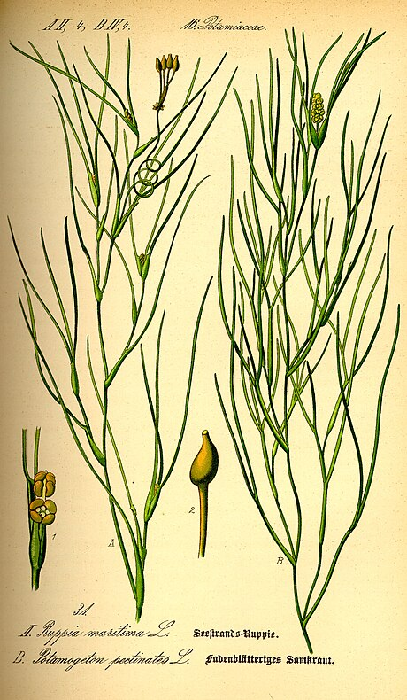

Ruppiaceae
Widgeonweed Family / Ditchgrass Family
Ruppiaceae is a small monocot family containing the single genus Ruppia, comprising highly specialized submerged aquatic herbs. They are found nearly worldwide in brackish or saline waters, such as coastal estuaries, lagoons, and inland salt lakes. Widgeonweeds are characterized by their slender, thread-like stems and leaves with sheathing bases, extremely reduced flowers lacking a perianth adapted for water pollination (hydrophily), and distinctive fruits consisting of small, stalked drupelets borne on a long, often coiling peduncle.
Overview
The Ruppiaceae family, represented by the cosmopolitan genus Ruppia, showcases remarkable adaptation to saline aquatic environments. These plants, commonly known as widgeonweeds or ditchgrasses, thrive in conditions where few other vascular plants can survive. They form submerged meadows in coastal brackish waters and inland alkaline or saline lakes across the globe.
Their life cycle is intricately linked to water. Pollination occurs either at the water surface or entirely submerged, with pollen released in strands or clouds. After fertilization, the flower stalk (peduncle) elongates dramatically, often coiling, and each individual carpel develops into a small drupelet borne on its own elongating stalk (podogyne). These fruits are a crucial food source for waterfowl, particularly ducks like widgeons, giving the family its common name.
Taxonomically, the number of species within Ruppia is debated, ranging from one highly variable species (Ruppia maritima) to around ten, depending on the classification system. Phylogenetically, Ruppiaceae belongs to the monocot order Alismatales, closely related to seagrass families and pondweeds.
Quick Facts
- Scientific Name: Ruppiaceae
- Common Name: Widgeonweed Family, Ditchgrass Family
- Number of Genera: 1 (Ruppia)
- Number of Species: ~1-10 (taxonomy debated)
- Distribution: Cosmopolitan, in brackish or saline aquatic habitats.
- Evolutionary Group: Monocots - Alismatales
- Habitat: Submerged in coastal estuaries, lagoons, inland salt/alkaline lakes.
Key Characteristics
Growth Form and Habit
Submerged aquatic herbs, annual or perennial, growing from slender rhizomes.
Leaves
Leaves are alternate (or appearing opposite below the inflorescence), simple, entire, and very slender, typically thread-like (filiform) or linear. The base of the leaf forms an open sheath that surrounds the stem.
Stems
Stems are slender, thread-like, branched, and root at the lower nodes or arise from rhizomes.
Roots
Fibrous roots, arising from nodes or rhizomes.
Sexuality and Inflorescence
The inflorescence is highly modified and consists typically of 2 (sometimes more) tiny flowers, initially enclosed within a leaf sheath at the apex of a short stalk (peduncle). At flowering time, this peduncle elongates dramatically, becoming very long and often coiling spirally after fertilization. Flowers are typically considered perfect (bisexual).
Flowers
Flowers are extremely reduced and adapted for water pollination (hydrophily).
- Perianth: Completely absent (no sepals or petals).
- Stamens: 2, sessile (lacking filaments), each anther typically having two pollen sacs (thecae) that release pollen into the water.
- Ovary: Superior, composed of (2-)4-8(-16) free carpels (apocarpous gynoecium). Each carpel contains a single pendulous ovule and has a small, often shield-shaped (peltate) or umbrella-shaped, sessile stigma.
Fruits and Seeds
The fruit is an aggregate of small, indehiscent, one-seeded drupelets (sometimes described as achenes). Each drupelet develops from a single carpel and becomes borne on a distinct stalk, the podogyne, which elongates significantly after fertilization. The entire cluster of stalked drupelets is held at the end of the elongated, often coiled peduncle.
Chemical Characteristics
Adapted physiologically to tolerate saline or brackish water conditions. No specific chemical compounds are widely noted as characteristic markers for the family itself beyond those related to salt tolerance.
Field Identification
Identifying Ruppiaceae involves recognizing its specialized aquatic habit and unique reproductive structures:
Primary Identification Features
- Habitat: Submerged in brackish or saline water (coastal or inland).
- Habit: Delicate, submerged herb with thread-like stems and leaves.
- Leaf Base: Leaves with distinct sheathing bases.
- Flowers: Extremely reduced, lacking perianth, with 2 stamens and multiple free carpels (requires magnification and careful observation).
- Peduncle: Flowers/fruits borne on a very long, often tightly coiled stalk (peduncle).
- Fruit: Aggregate of small, asymmetrical drupelets, each on its own elongated stalk (podogyne).
Secondary Identification Features
- Leaf Arrangement: Primarily alternate, but may appear opposite near inflorescence.
- Rhizomes: Slender rhizomes often present in substrate.
Seasonal Identification Tips
- Year-round Features: Submerged, thread-like vegetative growth in saline/brackish water is characteristic year-round.
- Flowering/Fruiting Season: The long, coiled peduncles bearing fruits are highly diagnostic and often visible during warmer months after flowering. Flowers themselves are very inconspicuous.
Common Confusion Points
Ruppia can be confused with other submerged aquatic plants:
- Potamogetonaceae (Pondweeds, esp. narrow-leaved species like Stuckenia/Potamogeton pectinatus): Often found in similar habitats (including brackish). Distinguished by having distinct flowers with 4 tepals and 4 stamens, and fruits that are sessile or shortly stalked achenes/drupelets, lacking the long coiled peduncle and podogynes of Ruppia.
- Zosteraceae, Cymodoceaceae, Posidoniaceae (Seagrasses): Primarily marine (fully saline). Vegetative structure often more robust (flattened leaves, thicker rhizomes). Flower and fruit structures are different and adapted to marine conditions.
- Zannichelliaceae (Horned Pondweed): Found in fresh or brackish water. Has thread-like leaves (often opposite). Distinguished by having unisexual flowers (though often on same plant), single stamen, and characteristic clustered, often curved or "horned" achenes lacking long podogynes or coiled peduncles.
- Najadaceae (Naiads): Fresh or brackish water. Often brittle stems, leaves usually opposite or whorled and finely toothed. Flowers tiny, axillary, unisexual; fruit a single achene.
The combination of thread-like habit in saline/brackish water, flowers lacking perianth, the long coiled peduncle, and stalked drupelets (podogynes) is unique to Ruppiaceae.
Field Guide Quick Reference
Look For:
- Submerged aquatic herb
- Habitat: Brackish/saline water
- Stems/Leaves: Thread-like
- Leaf bases sheathing
- Flowers tiny, no perianth, 2 stamens
- Ovary of 4+ free carpels
- Flowers/Fruits on long, coiling peduncle
- Fruit: Aggregate of drupelets on stalks (podogynes)
Key Variations:
- Degree of peduncle coiling
- Shape/size of drupelets
- (Taxonomy complex, species hard to distinguish)
Notable Examples
The family contains only the genus Ruppia, with species identification being complex:

Ruppia maritima complex
Widgeonweed, Ditchgrass
This name often refers to a widespread and highly variable species complex found globally in suitable brackish and saline aquatic habitats. It exhibits the key characteristics of the family, including the thread-like habit, reduced flowers, coiled peduncles, and stalked drupelets. It's an important food source for waterfowl.
Phylogeny and Classification
Ruppiaceae is a monocot family placed within the order Alismatales. This order contains a large proportion of aquatic and wetland plants, including seagrasses, pondweeds, arrowhead plants, and aroids.
Molecular phylogenetic studies consistently place Ruppiaceae within the core aquatic clade of Alismatales. It is closely related to the marine seagrass families, particularly Cymodoceaceae, and also shows affinities with Posidoniaceae and Zosteraceae. This group, along with Potamogetonaceae (pondweeds), represents a major evolutionary radiation into aquatic environments. Ruppiaceae's adaptation to saline and brackish conditions, intermediate between freshwater pondweeds and fully marine seagrasses, makes its phylogenetic position particularly interesting.
Position in Plant Phylogeny
- Kingdom: Plantae
- Clade: Angiosperms (Flowering plants)
- Clade: Monocots
- Order: Alismatales
- Family: Ruppiaceae
Evolutionary Significance
Ruppiaceae is significant for studying plant adaptation and evolution:
- Adaptation to Saline Aquatics: Represents a key lineage adapted to challenging brackish and saline water environments, bridging freshwater and marine habitats.
- Hydrophilous Pollination: Showcases extreme floral reduction and specialization for pollination by water, a relatively rare strategy among angiosperms.
- Unique Reproductive Structures: The combination of the long, coiling peduncle and stalked drupelets (podogynes) is a unique morphological syndrome within flowering plants.
- Phylogenetic Link: Its position near the seagrass families provides insights into the evolutionary transitions between freshwater, brackish, and fully marine aquatic lifestyles within Alismatales.
- Ecological Role: As primary producers and food sources (especially for waterfowl) in specific coastal and inland saline ecosystems.